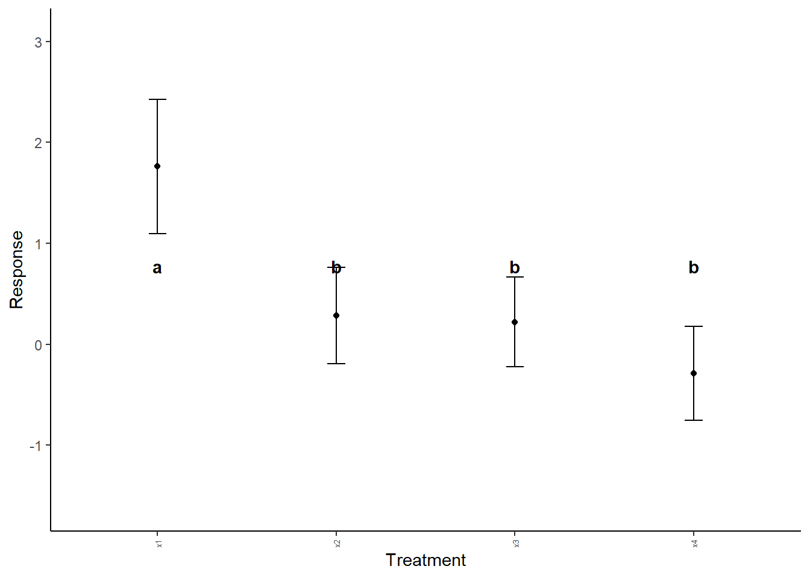
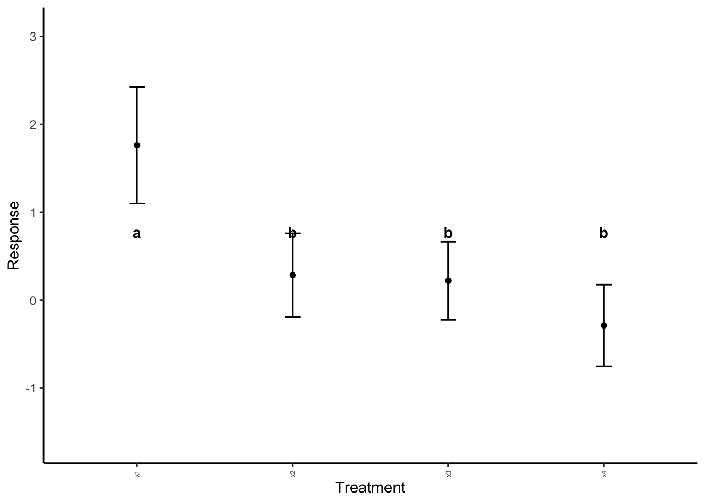

x <- 10
x[1] 10The following are common useful commands used in R, with examples of their use.
<- / = - save a value as an objectx <- 10
x[1] 10%>% - “pipe” a command or output into another command. Required tidyverse to run, and you can use the shortcut CTRL SHIFT M on Windows or Mac.# make repeatable
set.seed(930)
# random string
x <- rnorm(20)
x %>%
# pass to summary
summary() %>%
# pass summary through round
round(2) Min. 1st Qu. Median Mean 3rd Qu. Max.
-1.94 -0.48 -0.06 -0.05 0.36 1.80 c - concatenate, place two values togetherx <- c(10,11)
x[1] 10 11For these examples, we will create a random vector of number to demonstrate how they work.
x <- rnorm(1000)mean - get the mean / average of a set of datamean(x)[1] 0.04962364The following functions are those developed for this class or adapted from code posted to sources like StackOverflow.
For these basic stats, we are using the following example data:
### EXAMPLE DATA ###
x <- c(1,2,3,5,5,4,6,8,7,9,5)# Based on Statology function
# define function to calculate mode
# works on vectors of data
find_mode <- function(x) {
# get unique values from vector
u <- unique(x)
# count number of occurrences for each value
tab <- tabulate(match(x, u))
# if no mode, say so
if(length(x)==length(u[tab == max(tab)])){
print("No mode.")
}else{
# return the value with the highest count
u[tab == max(tab)]
}
}
find_mode(x)[1] 5se <- function(x){
n <- length(x) # calculate n
s <- sd(x) # calculate standard deviation
se_val <- s/sqrt(n)
return(se_val)
}
se(x)[1] 0.7385489cv <- function(x){
sigma <- sd(x)
mu <- mean(x)
val <- sigma/mu
return(val)
}
cv(x)[1] 0.4898979Remember - in the \(Z\)-score code below, if no \(n\) is specified, then it will default to \(n = 1\).
zscore <- function(xbar, mu, sd.x, n = 1){
z <- (xbar - mu)/(sd.x/sqrt(n))
return(z)
}
zscore(xbar = 62,
mu = 65,
sd.x = 3.5,
n = 5)[1] -1.91663The following example data are going to be used to illustrate these functions.
#### EXAMPLE DATA ####
set.seed(8675309)
for(i in 1:4){
x <- rnorm(10)
if(i == 1){
x <- rnorm(10, mean = 2)
data <- x %>% as.data.frame()
colnames(data) <- "Response"
data$Explanatory <- paste0("x",i)
}else{
newdat <- x %>% as.data.frame()
colnames(newdat) <- "Response"
newdat$Explanatory <- paste0("x",i)
data <- rbind(data,newdat)
}
}
# split into "typical" table
expanded_data <- NULL
expanded_data$x1 <- data$Response[which(data$Explanatory=="x1")]
expanded_data$x2 <- data$Response[which(data$Explanatory=="x2")]
expanded_data$x3 <- data$Response[which(data$Explanatory=="x3")]
expanded_data$x4 <- data$Response[which(data$Explanatory=="x4")]
expanded_data <- expanded_data %>%
as.data.frame()The above is a one-way ANOVA. As a reminder, we would calculate the test as follows:
# pivot longer does not work for one-way ANOVA, requires blocking factor
# can rbind things with same colnames to make longer
example_aov <- aov(Response ~ Explanatory, data)
summary(example_aov) Df Sum Sq Mean Sq F value Pr(>F)
Explanatory 3 23.40 7.801 11.54 1.89e-05 ***
Residuals 36 24.33 0.676
---
Signif. codes: 0 '***' 0.001 '**' 0.01 '*' 0.05 '.' 0.1 ' ' 1Above, we can see a significant result of the ANOVA. We can follow this up with a Tukey test. This requires the package agricolae! Check the ANOVA pages, however, as not all ANOVA can use this agricolae shortcut method.
example_tukey <- HSD.test(example_aov,
# what to group by?
"Explanatory",
# significance level?
alpha = 0.05,
# are data unbalanced
unbalanced = FALSE,
# show answer?
console = TRUE)
Study: example_aov ~ "Explanatory"
HSD Test for Response
Mean Square Error: 0.6758192
Explanatory, means
Response std r se Min Max Q25 Q50
x1 1.7620153 1.0505466 10 0.2599652 0.4504476 3.972459 1.1175485 1.44911720
x2 0.2841495 0.7532422 10 0.2599652 -0.4729986 1.985826 -0.3497379 0.21347543
x3 0.2197337 0.7019368 10 0.2599652 -0.6150452 1.574903 -0.2436023 -0.04493909
x4 -0.2890524 0.7345336 10 0.2599652 -1.9769014 0.684072 -0.5394534 -0.07741642
Q75
x1 2.07491533
x2 0.64579865
x3 0.53544151
x4 0.04323417
Alpha: 0.05 ; DF Error: 36
Critical Value of Studentized Range: 3.808798
Minimun Significant Difference: 0.9901551
Treatments with the same letter are not significantly different.
Response groups
x1 1.7620153 a
x2 0.2841495 b
x3 0.2197337 b
x4 -0.2890524 bRemember - you need to change "Explanatory" to your explanatory variable (in quotes!) and you need to change Response to your response column (no quotes!). The following requires plyr to work, but the function itself should call up plyr if you do not yet have it loaded.
# summarize by group
summary_data <- function(data, explanatory){
require(plyr)
ddply(data, paste(explanatory), summarise,
N = length(Response),
mean = mean(Response),
sd = sd(Response),
se = sd / sqrt(N))
}
example_summary <- summary_data(data = data, explanatory = "Explanatory")Loading required package: plyr------------------------------------------------------------------------------You have loaded plyr after dplyr - this is likely to cause problems.
If you need functions from both plyr and dplyr, please load plyr first, then dplyr:
library(plyr); library(dplyr)------------------------------------------------------------------------------
Attaching package: 'plyr'The following objects are masked from 'package:dplyr':
arrange, count, desc, failwith, id, mutate, rename, summarise,
summarizeThe following object is masked from 'package:purrr':
compactexample_summary Explanatory N mean sd se
1 x1 10 1.7620153 1.0505466 0.3322120
2 x2 10 0.2841495 0.7532422 0.2381961
3 x3 10 0.2197337 0.7019368 0.2219719
4 x4 10 -0.2890524 0.7345336 0.2322799This command requires a Tukey HSD object from agricolae. You can manually create a table like this for some other scenarios; see relevant pages for documentation.
# note first group must be EXACT MATCH to your summary_data object
# groups are saved in the Tukey object
# this is true for Tukey later as well
# the following is a function that will make the significant label table
sig.label.maker <- function(tukey_test, group_name){
sig.labels <- tukey_test$groups %>%
# convert to a data.frame
as.data.frame() %>%
# create a new column - place rownames into the column
# converts to a format better for ggplot
mutate(Explanatorys = rownames(tukey_test$groups)) %>%
# rename column to prevent confusion
# specify dplyr; default function may be from plyr and not work
dplyr::rename(Significance = groups)
colnames(sig.labels)[which(colnames(sig.labels) == "Explanatorys")] <- group_name
return(sig.labels)
}
# Function requires explanatory groups in quotes
sig_labels <- sig.label.maker(example_tukey, "Explanatory")
sig_labels Response Significance Explanatory
x1 1.7620153 a x1
x2 0.2841495 b x2
x3 0.2197337 b x3
x4 -0.2890524 b x4The following function plots ANOVAS if you have a summary_data object and a sig_labels object, as shown above. This does not work on ANOVA with interactive components.
anova_plotter <- function(summary_data, explanatory,
response, sig_labels,
y_lim=NA, label_height=NA,
y_lab=NA, x_lab=NA){
require(tidyverse)
plot_data_1 <- summary_data[,c(explanatory, response, "se")]
plot_data_2 <- sig_labels[,c(explanatory,"Significance")]
colnames(plot_data_1) <- c("explanatory", "response", "se")
colnames(plot_data_2) <- c("explanatory", "Significance")
plot_data <- plot_data_1 %>%
full_join(plot_data_2, by = "explanatory")
if(is.na(y_lim)){
if(min(plot_data$response) < 0){
y_lim <- c(min(plot_data$response) -
4*max(plot_data$se),
max(plot_data$response) +
4*max(plot_data$se))
}else{
y_lim <- c(0,max(plot_data$response) +
4*max(plot_data$se))
}
}
if(is.na(label_height)){label_height <- 0.25*max(y_lim)}
if(is.na(y_lab)){y_lab <- "Response"}
if(is.na(x_lab)){x_lab <- "Treatment"}
plot_1 <- ggplot(plot_data,
aes(x = explanatory, y = response)) +
geom_point() +
geom_errorbar(data = plot_data,
aes(ymin = response - 2*se,
ymax = response + 2*se,
width = 0.1)) +
ylim(y_lim) +
theme_classic() +
theme(legend.position = "none",
axis.text.x = element_text(angle = 90, vjust = 0.5, size = 5)) +
geom_text(data = plot_data,
# make bold
fontface = "bold",
# define where labels should go
aes(x = explanatory,
# define height of label
y = label_height,
# what are the labels?
label = paste0(Significance))) +
xlab(x_lab) +
ylab(y_lab)
print(plot_1)
}
anova_plotter(summary_data = example_summary,
explanatory = "Explanatory",
response = "mean", # from summary_data table! What is to be plotted
sig_labels = sig_labels)
Note that in the above, the default label height is not working for us. We can adjust this with label_height.
anova_plotter(summary_data = example_summary,
explanatory = "Explanatory",
response = "mean", # from summary_data table! What is to be plotted
sig_labels = sig_labels,
label_height = -1)
Much better!